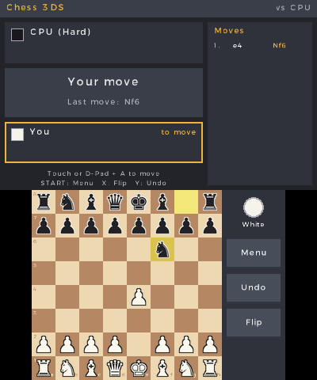
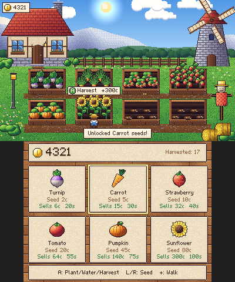
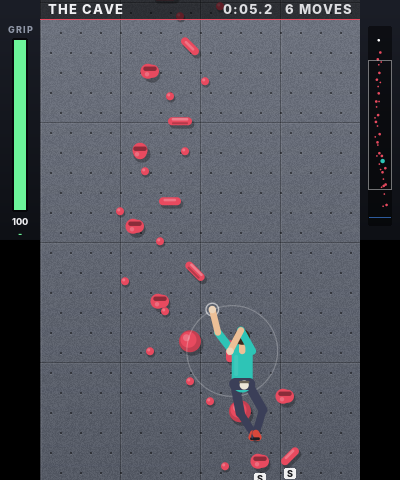
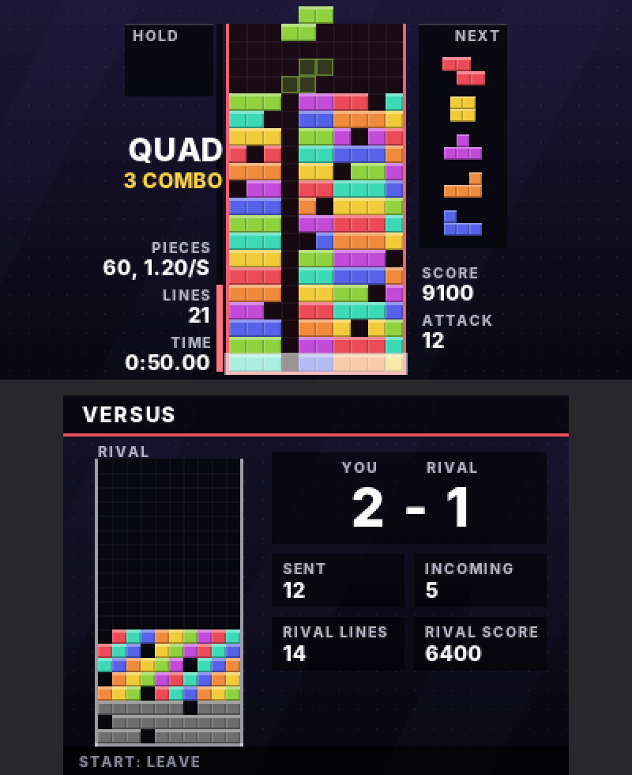

Projects
Four games for the Nintendo 3DS and a 3D-printed MP3 player.
-

Chess 3DS
Chess that uses both screens of the Nintendo 3DS. Play pass and play, against the CPU on three difficulty levels, or against a friend over local wireless with no internet needed.
View on GitHub
-

Tiny Harvest
A cozy pixel-art farming game. Walk between eight planter beds, plant, water and harvest with one button, and save up coins to unlock new seeds, from quick turnips to towering sunflowers.
View on GitHub
-

Boulder 3DS
A bouldering game where you set your own routes by tapping holds onto a wall, or generate one at the grade you want, then climb it before your grip runs out. A built-in solver grades every route and shows the best way up.
View on GitHub
-

Tetris 3DS
Tetris with a two-console wireless versus mode, where clearing lines sends garbage rows to the other player. It also has marathon and zen modes, and a chiptune soundtrack that the console synthesises itself.
View on GitHub
-
clip.mp3
A 3D-printed MP3 player in the spirit of Teenage Engineering gear, built around an ESP32-S3 with a small OLED screen, a rotary dial and an SD card slot. It comes with a parametric OpenSCAD case, printable STL files and the firmware.
View on GitHub